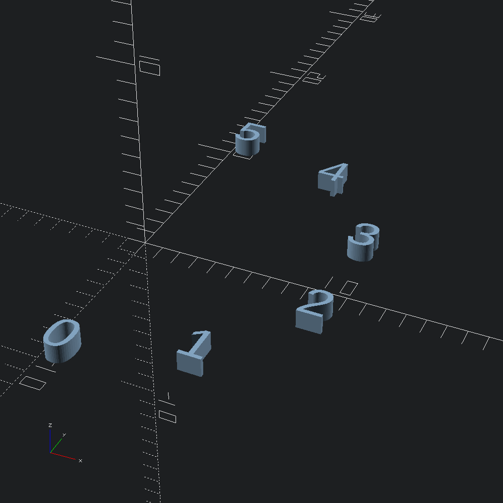

Arcing paths
open Scad_mlA numbered marker function for Path2.show_points and Path3.show_points that we can use to visualize our arcs (and their ordering).
let show i = Scad.linear_extrude ~height:1. (Scad.text ~size:5. (Printf.sprintf "%i" i))let () =
let arc = Path2.arc_through ~fn:5 (v2 10. 10.) (v2 20. 20.) (v2 10. 30.) in
Scad.to_file "arc_points_2d.scad" (Path2.show_points show arc)
let () =
let arc = Path3.arc_through ~fn:5 (v3 0. (-10.) 0.) (v3 10. (-5.) 10.) (v3 0. 0. 20.) in
Scad.to_file "arc_points_3d.scad" (Path3.show_points show arc)